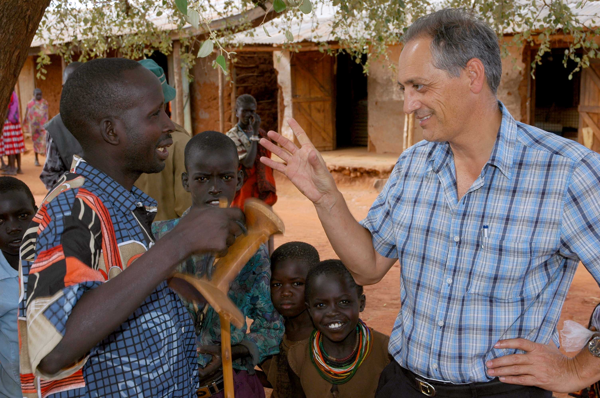

Tomas Herreros Baroja è nato 1/10/1955, a Autol, d. Calahorra-Logroño (E). Ha frequentato il seminario minore dell’Istituto Comboniano e gli studi di teologia a Chicago (USA). Ha fatto la sua professione perpetua il 15 marzo del 1980 ed è stato ordinato sacerdote il 7 settembre del 1980.
Dopo la sua ordinazione sacerdotale p. Tomas è stato destinato in Kenya, nella missione tra i Pokot, dove ha lavorato tra il 1981-1990 e il 2006-2015. È stato formatore nello scolasticato a Pietermaritzburg (Sudafrica) tra il 2002 e il 2005 ed è attualmente formatore dello scolasticato di Lima (Perù).
Tra i suoi lavori: Analytical Grammar of the Pokot Language, Università di Trieste, 1980. The Learner’s English-Pokot/Pokot-English Dictionary, Nairobi 1991. Inside the Beehive of the Pokot (Pokot rituals and beliefs), Kacheliba 1990.
